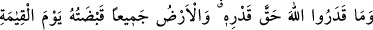
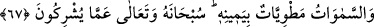

“Ve” sana yaptığı ihsânlara “şükredenlerden ol.” Senin kendi gayretinle ve amelinle
değil Allah’ın fazlı ve keremiyle elde ettiğin tevhîd ve ibâdet, kezâ nübbüvet ve risâlet
şükredilmesi gereken nimetler cümlesindendir.
Bilesin ki şükrün üç derecesi vardır:
1- Sevilip arzu edilen şeylere karşı direnerek şükür. Bu şükürde yahudiler,
hıristiyanlar ve mecûsîler müslümanlarla ortaktırlar.
2- İstenmeyen şeylere karşı direnerek şükür. Cennete ilk çağrılacak olanlar, bu şükrün
sâhipleridir. Çünkü “cennet hoşa gitmeyen şeylerle çevrilmiştir.”[141]
3- Nimeti verenden başkasını görmeyerek nimeti ve şiddeti/sıkıntıyı görmemek. Bu
müşâhede/görüş ve ondan lezzet almak, lezzetlerin en yücesidir. Çünkü bu sır
makamındadır.
Şu halde akıllı kimse, sağa sola hiç sapmadan Allah’a yönelmeye çalışır.
Rivâyete göre Zünnûn Mısrî (k.s.), bir ırmağın kenarında abdest almaya niyet
etmişken güzel bir câriye gördü. Câriye kendisine: “Seni ilk olarak akıllı, sonra âlim,
sonra ârif olduğunu zannettim. Ama sen öyle değilmişsin!” dedi. Zünnûn: “Peki neden?”
diye sorunca da şu cevabı verdi: “Akıllı kimse abdestin faziletlerini bildiği için
abdestsiz dolaşmaz. Âlim olan harama bakmaz. Çünkü âlim mutlaka ilmiyle amel eder.
Ârif ise Allah’tan başka hiçbir şeye iltifat etmez. Çünkü ârifliğin gereği, gerçek
sevgilinin dışındaki bir varlığı O’na tercih etmemektir. Çünkü, O’nun güzelliği
kendisindendir, O’ndan başkasının güzelliği ise O’ndan alınmıştır. Allah’ın dışındaki
varlıklar (gayr) her ne kadar O’nun tecellîsine mazhar olsa da onlara bakmak bir bağdır.
Huzur mutlaklık (ıtlâk) âlemindedir. Bu ise tevhîd olunanı enfüs ve âfâktan kesip
ayırmak demek olan tefrîddir.
Ey Câmî; iki cihanda da ebedî olan Allah’tır
Mâsivâ ise bâtıl ve boş bir hayaldir
Yüce Allah’tan bu hakîkî tevhîdi niyaz ederiz.
67. Onlar Allah’ı hakkıyla tanıyıp bilemediler. Kıyamet günü bütün yeryüzü
O’nun tasarrufundadır. Gökler O’nun kudret eliyle dürülmüş olacaktır. O,
müşriklerin ortak koşmalarından yüce ve münezzehtir.
Abdullah b. Abbâs ve Abdullah b. Mes’ûd (r.anhüm)’ün rivâyet ettiğine göre bir
yahûdi âlimi Rasûlullah (s.a.)’e gelerek şöyle dedi: “Ey Muhammed! Farkında mısın ki
Allah kıyamet günü gökleri ve yerleri bir parmağına, dağları bir parmağına; su, toprak